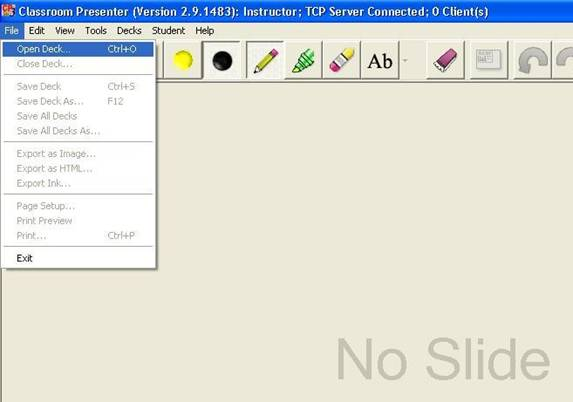
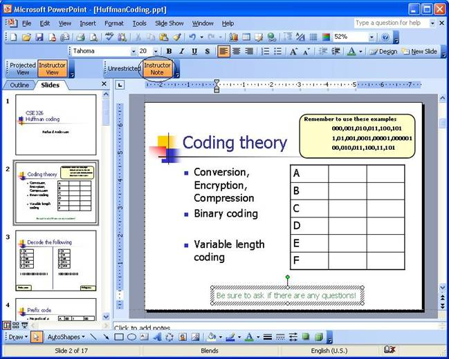
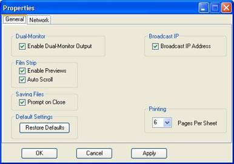

Welcome to Classroom Presenter 3! |
|
GeneralA mailing list [presenter-profs] has been set up for users of Presenter. If you want to be added to the list, send mail to Richard Anderson. Set-Up RequirementsInstructor RequirementsThere are two different instructor set-up options: stationary and mobile. For a stationary presentation you will need a Tablet PC running WindowsXP or Vista connected directly to a data projector. For a mobile presentation you will need two machines: you will be able to move freely about the classroom with your Tablet PC, but you will need a second computer (does not have to be a tablet, but a tablet will work) in the Public role that should be connected directly to the projector. This set up is enough if you only want to take advantage of instructor inking on slides. Student RequirementsTo take advantage of Presenter's student interaction features, students will need machines running WindowsXP or Vista with Classroom Presenter installed. To use Presenter's student inking capabilities, students will need Tablet PCs. For how to connect to the students, please see Networking. For how to use Presenter's student interaction features, please see the student submission help page. ProjectingProjecting may be done with the tablet from which you are lecturing, or a second computer in the Public role. If you use a machine in the public role, it does not need to be a tablet because all the inking is done from the instructor tablet. In both cases, you will first need to physically connect the projector to the computer. If you're projecting the lecture from your tablet, you need to "attach" a second display. To do this, go to the Control Panel and open Display. Under the Settings tab, you'll see two boxes, 1 and 2. Click box 2 and check the option "Extend my Windows desktop onto this monitor." (In Vista, you access display settings by going to Control Panel->Personalization->Display Settings.) Now the computer knows you want to show the lecture on a separate display (the projector). To display with a second machine, you might need to change the computer to display "internal and external." The computer has three settings, internal only, external only, and internal and external. To cycle through them, look for a button with two concentric rectangles, or an oval within a rectangle. On HP Tablets, the button is by the power button. On many laptops, it's often on the keyboard. It may take a few seconds for the display to update. If nothing is projected, try cycling through the projector's input settings. The mechanism for setting the display to extended desktop (or dual display) varies between different Tablet PCs, for example on Motion Computing machines, this is a setting found in the "Dashboard", and on an HP 4200 Tablet PC this is accessed via graphics options on the display context menu. If you did not select the Enable Dual Monitor Output checkbox at startup time, you may also select it from Tools->Options->General on the Properties Dialog box as discussed below. Starting Classroom PresenterThis section covers starting Presenter as an Instructor in both stand alone and networked modes, as well as student and public display roles. Stand alone mode should be used if you are giving a presentation from a Tablet PC connected directly to a projector. In this scenario, only one device is involved and no networking is required. Networked mode should be used if you need the instructor machine to interact with other machines running in either student or public display roles. Only one machine should be in instructor role. Instructor - in Stand Alone ModeYou can start Classroom Presenter either from the start menu (under UW CSE) or by double clicking on a .cp3 file. In either case, you will first see the Connection Sequence dialog box. Step 1: Select the Instructor role under Stand Alone. Select the Enable Dual-Monitor Output checkbox if you wish to display from your extended desktop (see Projecting for more information). Step 2: Click the Start a New Presentation button at the bottom of the page. If you clicked on a cp3 file to start Presenter the file will be automatically loaded for you. Otherwise, choose Open Deck from the File menu. Both PowerPoint and .cp3 files can be selected and loaded directly into Presenter. Instructor - in Networked ModeYou can start Classroom Presenter either from the start menu (under UW CSE) or by double clicking on a .cp3 file. In either case, you will first see the Connection Sequence dialog box. Step 1: Select Instructor role under Networked. Select the Enable Dual-Monitor Output checkbox if you wish to display from your extended desktop (see Projecting for more information). Step 2: Select Start TCP Server and Take Instructor Role after it appears. Step 3: Once the Start a New Presentation button at the bottom of the page is enabled, click it. If you clicked on a cp3 file to start Presenter the file will be automatically loaded for you. Otherwise, choose Open Deck from the File menu. Both PowerPoint and .cp3 files can be selected and loaded directly into Presenter. The instructor may choose to open a deck at any time while students are starting Presenter on their machines, although broadcast of slides to student machines will be faster if the instructor opens their deck after student machines have connected. StudentStart Classroom Presenter from the start menu (under UW CSE). You will first see the Connection Sequence dialog box. Step 1: Select Student role under Networked. If student machines are on the same subnet as the instructor, then the instructor's presentation should show up under the Broadcasted Presentations tab. Step 2: Select the instructor's presentation from Available Presentations after it appears. If the instructor's presentation does not appear, use Alternate Step 2 below. Alternate Step 2: Under Advanced Connection Options, choose Connect to TCP Server. A dialog box will appear asking for the student to enter the instructor's IP address, and port if necessary. The default port will be correct unless a dialog box also appeared on the instructor's machine when it was connecting, telling the instructor that an alternate port was used. The instructor can find their IP address by going to Help->IP Address. After entering the instructor's IP address, the presentation should appear under Presentations in Chosen Venue. Select the presentation. Step 3: Once the Join the Selected Instructor's Presentation button at the bottom of the page is enabled, click it. Public DisplayIf you would like to connect a machine other than the instructor's tablet to the projector, you should start it in the Public Display role. The connection sequence for this is identical to the student sequence above with the exception that the Public Display role should be selected. NetworkingIf the students will be using Tablet PCs to follow along or send student submissions, you will need to set up a network. If only the instructor will be running Presenter, no networking is needed. To connect the student and instructor PCs, you can either connect to the Internet or set up your own network isolated from the Internet. To connect through the Internet, the classroom needs either wired or wireless access. Your campus's classroom support service should be able to tell you where the Internet is available. WiredThere are two options for a wired network. Either you can use a pre-existing connection and have every machine connected to the Internet. Or you can use a switch or router to connect all the computers to each other (but not the outside world). If you have a lot of computers in one classroom, a wired connection can get cluttered because each machine needs its own wire. However, the performance on a wired network is very reliable. Wireless InternetWith a wireless Internet available (an access point), each machine can connect to the Internet and access the instructor machine. Wireless Router (without connection to the Internet)You may also set up your own network using a wireless router (base station) without connecting to the Internet. In this case, the instructor machine as well as the student machines should be connected to the network associated with the router. Ad hoc networkOne final option is to create an ad hoc network between machines without the use of an router. The easiest way to use an ad hoc network is to have the instructor create one for the class and let the students connect to it. Click here for instructions on setting up an ad hoc network. Creating a Slide Deck1. Using a PowerPoint deck directlyClassroom Presenter 3 allows you to load a PowerPoint file directly into Classroom Presenter. If you would like to add instructor-only notes to your presentation, you will need to install the PowerPoint Plugin available from the Classroom Presenter web page and described below. PowerPoint files containing instructor notes may also be loaded directly into Classroom Presenter. 2. Creating a cp3 file from a set of images (using DeckBuilder)You may also create slide decks from a set of images (without the use of PowerPoint) using the DeckBuilder application. This is useful for creating cp3 decks from slide images created using Latex or other applications. DeckBuilder is included along with the installation under Start->All Programs->UW CSE->Presenter 3.0->DeckBuilder 3.0. Within DeckBuilder, use Edit->Insert Image Set to create a slide deck from a folder of images. One slide will be created from each image in the selected folder in alphabetical/numeric order. Then select File->Save to save your deck in cp3 format. Several options on the Edit menu also allow you to insert or delete individual slides from the slide deck. Instructor-Only NotesUsing the PowerPoint Plugin (download here), instructors can add notes (or any other PowerPoint object) to their slides that are only visible in the instructor's view and never seen on the students' tablets or projected view. The Plugin provides two pairs of buttons to view and create instructor-only content. These pairs of buttons allow you to 1) toggle your view of the slide deck between the projected and instructor views, and to 2) set the visibility level of individual PowerPoint objects on a slide. 1. Toggle Slide Deck View:The pair of buttons on the left indicate whether the slide deck is currently being shown to the PowerPoint user in its Projected View (as it would be projected to the class or seen on student machines) or in its Instructor View (as it would be shown on the Instructor's tablet). Unless you are interested in creating instructor-only notes, you should be sure that when editing your slides you are viewing the deck in the Projected View as seen below: If you would like to view the entire slide deck as it would be visible only on the instructor's machine, you may switch to the Instructor View as seen below: Note how this slide deck contains several objects that will only be visible on the instructor's machine. On the slide shown above, the yellow box in the upper right corner and the text in green at the bottom of the slide will not appear on the projected view or on student devices. If you are using a single machine in dual monitor mode, instructor-only content will be visible on the instructor's view but not on the view projected from the second desktop. 2. Set Object Visibility:The second pair of buttons indicates the visibility level of the selected PowerPoint object. In the two pictures above, no object has been selected so the buttons are grayed out. In the picture below the green text at the bottom of the page has been selected. The object visibility button indicates that this object (a text box) has been tagged as an Instructor Note and will be visible only on the instructor's machine: The text on the left of the slide selected in the picture below has been tagged as Unrestricted content that will be seen on all devices. You may change the visibility level of an object by selecting it and toggling between Unrestricted and Instructor Note settings. By default, PowerPoint objects you create while in a certain view (Projected vs. Instructor) will have their visibility set to that level (Unrestricted vs. Instructor Note). This means that if you are seeing the Instructor View, all PowerPoint objects, including content on new slides you insert, will have their visibility level set to be an Instructor Note by default. It is a good idea to toggle between Projected and Instructor views occasionally to be sure you have not inadvertently created content as Instructor Notes. Presenter ControlsInstructorWith the Presenter control buttons, instructors can:
Instructor button controls: Holding the pen down on the filmstrip generates a small preview window (not projected or seen on student machines): StudentWith the Presenter control buttons, students can:
Student button controls: Student view with free navigation enabled: Closing Slide DecksTo ensure that you close the deck you intend to close, you must select one of the slides from that deck so that it is visible in the main window. Clicking the tab to the side of the filmstrip will not select the deck! To close the selected deck, go to File->Close Deck. Saving Slide Decks (as cp3 files)Instructors can save their inked presentation decks, student submission decks, and inked whiteboard decks. Students can also save presentation decks including instructor ink and student ink. All slide decks are saved as Classroom Presenter 3 slide decks (cp3 file extension). To ensure that you save the deck you intend to save, you must select one of the slides from that deck so that it is visible in the main window. Clicking the tab to the side of the filmstrip will not select the deck! To save the selected deck, go to File->Save Deck. You may save all decks at once using File->Save All Decks. You can turn on a prompt that will ask if you want to save before closing. See Customizing Options. Exporting Slide Decks (as html files and images)Instructors can create an html page containing JPEG images of all of their inked slides from a selected deck. To create a web page go to File->Export as HTML. You will then be prompted for a filename for the web page. To create only the image files, select File->Export as Image. You will then be prompted for a folder where the images will be placed. (There is also an option for saving just the ink as a binary .isf file. This option does not save the slide background and is not needed for general use.) Customizing OptionsSeveral aspects of Classroom Presenter can be customized via the Properties dialog box, accessible from Tools->Options. Most options of interest are on the General tab.  |
|